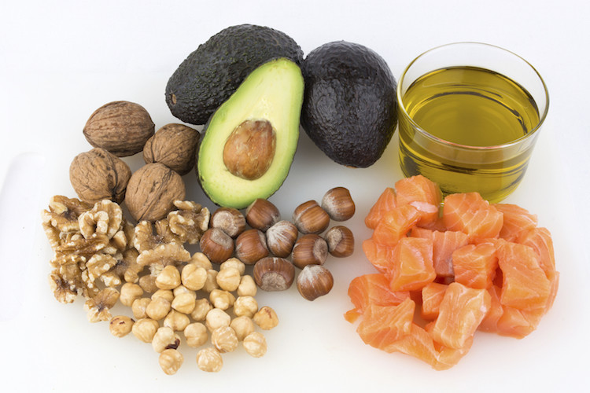

Los carbohidratos son biomoléculas que contienen carbono, hidrógeno y oxígeno, y que se forman por la unión de moléculas de azúcar. Los carbohidratos son una fuente rápida de energía para el organismo, ya que se pueden descomponer en glucosa, que es el combustible de las células. Los carbohidratos se clasifican en tres tipos según el número de azúcares que los componen: monosacáridos, disacáridos y polisacáridos
Los monosacáridos son los azúcares más simples y se pueden absorber directamente por el intestino. Algunos ejemplos son la glucosa, la fructosa y la galactosa. Los disacáridos son el resultado de la unión de dos monosacáridos y se tienen que hidrolizar para ser absorbidos. Algunos ejemplos son la sacarosa, la lactosa y la maltosa. Los polisacáridos son los carbohidratos más complejos y están formados por muchas moléculas de azúcar. Algunos ejemplos son el almidón, el glicógeno, la celulosa y la quitina
Los carbohidratos cumplen varias funciones en los seres vivos, como proporcionar energía, formar parte de la estructura de algunos tejidos y células, participar en los ciclos biogeoquímicos y servir como precursores de otras biomoléculas1
Lípidos
s lípidos son moléculas orgánicas que contienen carbono, hidrógeno y oxígeno, y que se caracterizan por ser hidrofóbicas, es decir, insolubles en agua. Los lípidos cumplen varias funciones en los seres vivos, como reserva de energía, soporte estructural, regulación celular y transporte de nutrientes. Hay dos tipos de lípidos: saponificables y no saponificables. Los lípidos saponificables son aquellos que se pueden hidrolizar en presencia de una base, como los aceites, las grasas, las ceras y los fosfolípidos. Los lípidos no saponificables son aquellos que no se pueden hidrolizar, como los esteroides, los terpenos y los carotenoides
Los lípidos saponificables se pueden subdividir en simples y complejos. Los lípidos simples son aquellos que están formados por ácidos grasos y alcoholes. Los ácidos grasos son cadenas de carbono con un grupo carboxilo en un extremo. Los alcoholes pueden ser glicerol, que tiene tres grupos hidroxilo, o alcoholes de cadena larga, como el colesterol. Los lípidos simples más comunes son los triglicéridos, que son ésteres de glicerol y tres ácidos grasos. Los triglicéridos se almacenan en el tejido adiposo y sirven como reserva de energía. Otros lípidos simples son los céridos, que son ésteres de ácidos grasos y alcoholes de cadena larga. Los céridos forman las ceras, que tienen propiedades impermeables y protectoras
Los lípidos complejos son aquellos que contienen otros elementos además de ácidos grasos y alcoholes. Los más importantes son los fosfolípidos, que son ésteres de glicerol, dos ácidos grasos y un grupo fosfato. El grupo fosfato puede estar unido a otros compuestos, como colina, etanolamina, serina o inositol.
Proteínas
Las proteínas son moléculas formadas por aminoácidos que tienen muchas funciones en los organismos vivos, como catalizar reacciones, transportar gases, defender contra infecciones y formar tejidos. Las proteínas se clasifican según la composición y las propiedades de sus cadenas laterales, que pueden ser polares, no polares, básicas o ácidas. Algunos ejemplos de alimentos que contienen proteínas son las carnes, los pescados, los mariscos, los frutos secos y los huevos.
Las proteínas se pueden clasificar según su composición, estructura, función o localización. Algunas categorías son: proteínas fibrosas, proteínas globulares, proteínas simples, proteínas conjugadas, proteínas catalíticas, proteínas reguladoras, proteínas estructurales, proteínas de transporte, proteínas de defensa y proteínas de membrana
Las proteínas son esenciales para la vida, ya que participan en casi todos los procesos celulares. Algunas de sus funciones son: formar parte de la estructura de los tejidos, catalizar reacciones químicas, regular la expresión de los genes, transportar oxígeno y otras sustancias, defender al organismo de agentes patógenos, transmitir señales entre las células y coordinar las actividades celulares
Las proteínas se sintetizan a partir de la información genética contenida en el ADN, mediante un proceso llamado traducción. El ADN se transcribe a ARN mensajero, que se une a los ribosomas, donde se ensamblan los aminoácidos siguiendo el código genético. El orden y la cantidad de aminoácidos determinan la forma y la función de la proteína

Ácidos nucleicos
Los ácidos nucleicos ADN y ARN son macromoléculas que almacenan y transmiten la información genética de los organismos vivos. El ADN es el material hereditario que se encuentra en el núcleo de las células y en algunos organelos, y que contiene las instrucciones para la síntesis de proteínas y otras funciones celulares. El ARN es el intermediario entre el ADN y los ribosomas, donde se traduce la información genética en proteínas. El ARN también puede tener otras funciones, como formar parte de los ribosomas, transportar aminoácidos o regular la expresión génica. El ADN y el ARN se componen de unidades llamadas nucleótidos, que tienen una base nitrogenada, un azúcar y un grupo fosfato. El ADN tiene una estructura de doble hélice, mientras que el ARN suele tener una estructura de cadena simple. Las bases nitrogenadas del ADN son adenina, timina, guanina y citosina, y las del ARN son adenina, uracilo, guanina y citosina.
El ADN y el ARN se componen de unidades llamadas nucleótidos, que tienen una base nitrogenada, un azúcar y un grupo fosfato. Los nucleótidos se unen mediante enlaces fosfodiéster para formar cadenas lineales o circulares1
El ADN tiene una estructura de doble hélice, donde dos cadenas de nucleótidos se enrollan una alrededor de la otra y se mantienen unidas por puentes de hidrógeno entre las bases complementarias. El ARN suele tener una estructura de cadena simple, aunque puede formar estructuras secundarias y terciarias plegándose sobre sí mismo
El ADN almacena la información genética de los organismos vivos, mientras que el ARN la transmite y la traduce en proteínas. Existen diferentes tipos de ARN con funciones específicas, como el ARN mensajero, el ARN ribosomal, el ARN de transferencia, el ARN interferente y el ARN no codificante3
Los ácidos nucleicos son esenciales para la vida, ya que participan en casi todos los procesos celulares, como la replicación, la transcripción, la traducción, la regulación génica, la reparación del ADN, la recombinación, la expresión diferencial y la evolución